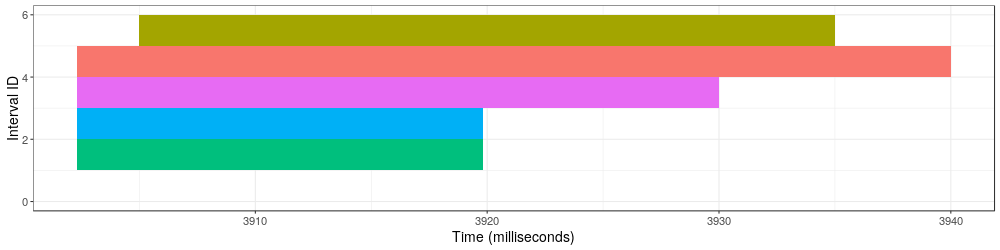
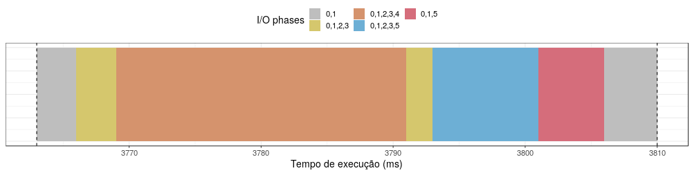
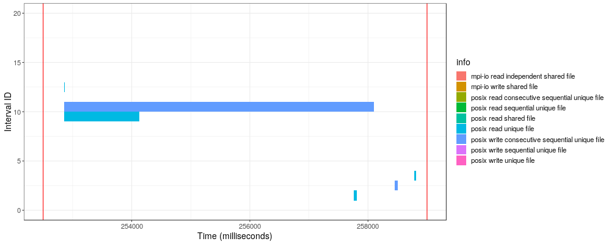
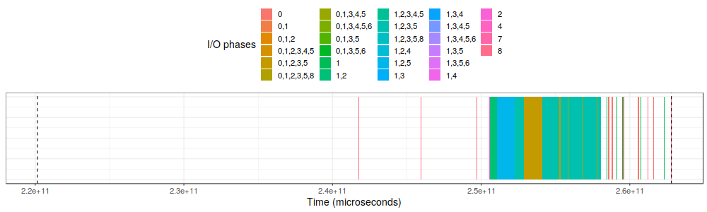
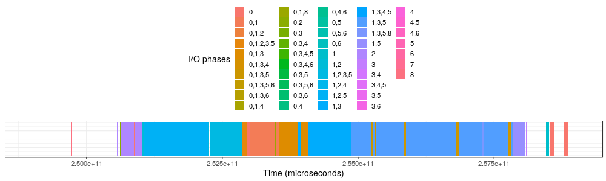
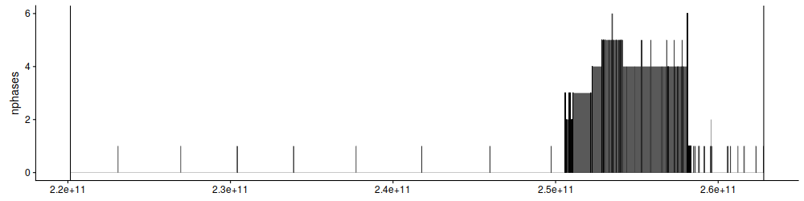
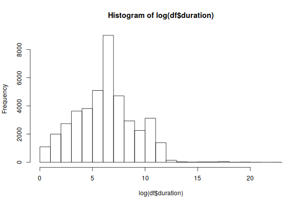
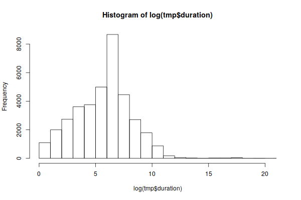

Overlap Analysis
Table of Contents
- 1. Load R librarys
- 2. Initial tests
- 3. 03/01/2012 analysis
- 3.1. read the raw data
- 3.2. Analysis of C++ results
- 3.2.1. Read CSV
- 3.2.2. Plot intervals
- 3.2.3. Plot intevals zoom
- 3.2.4. how many unique phases
- 3.2.5. how many unique jobs
- 3.2.6. Plot number of jobs during the day
- 3.2.7. Plot number of phases during the day
- 3.2.8. Summary of number of jobs
- 3.2.9. Summary of number of phases
- 3.2.10. Summary of duration
- 3.2.11. Histogram of duration
- 3.2.12. Are there starts duplicates?
1 Load R librarys
library(ggplot2) library(cowplot) library(dplyr)
Find out what's changed in ggplot2 at
https://github.com/tidyverse/ggplot2/releases.
Attaching package: ‘cowplot’
The following object is masked from ‘package:ggplot2’:
ggsave
Attaching package: ‘dplyr’
The following objects are masked from ‘package:stats’:
filter, lag
The following objects are masked from ‘package:base’:
intersect, setdiff, setequal, union
2 Initial tests
2.1 Analysis of raw data
- State "TODO" from
2.1.1 Read CSV
df <- as.data.frame(read.csv('../data/intervals.small.csv', dec = '.', sep = ';')) epoch_time <- 0 df$start = df$start * 1 df$start_time = df$start_time - epoch_time df$start_time = df$start_time * 1 # df$final_start_time = df$start_time + df$start df$end = df$end * 1 df$end_time = df$end_time - epoch_time df$end_time = df$end_time * 1 # df$final_end_time = df$end_time + df$end df$start_ = (df$start_time + df$start)# -epoch_time df$duration <- df$end - df$start df$end_ = df$start_ + df$duration #- epoch_time str(df) df
'data.frame': 12 obs. of 9 variables:
$ filename : Factor w/ 2 levels "11.parsed.json",..: 1 1 2 2 2 2 2 1 1 2 ...
$ start_time: num 3761 3761 3761 3761 3761 ...
$ end_time : num 4508 4508 4508 4508 4508 ...
$ start : num 2 2 10 10 25 25 25 2.3 2.3 2.3 ...
$ end : num 20 40 15 25 35 35 50 19.8 19.8 30 ...
$ info : Factor w/ 8 levels "posix file","posix read ",..: 6 7 8 4 3 2 1 6 7 8 ...
$ start_ : num 3763 3763 3771 3771 3786 ...
$ duration : num 18 38 5 15 10 10 25 17.5 17.5 27.7 ...
$ end_ : num 3781 3801 3776 3786 3796 ...
filename start_time end_time start end
1 11.parsed.json 3761 4508 2.0 20.0
2 11.parsed.json 3761 4508 2.0 40.0
3 12.parsed.json 3761 4508 10.0 15.0
4 12.parsed.json 3761 4508 10.0 25.0
5 12.parsed.json 3761 4508 25.0 35.0
6 12.parsed.json 3761 4508 25.0 35.0
7 12.parsed.json 3761 4508 25.0 50.0
8 11.parsed.json 3900 4508 2.3 19.8
9 11.parsed.json 3900 4508 2.3 19.8
10 12.parsed.json 3900 4508 2.3 30.0
11 12.parsed.json 3900 4508 2.3 40.0
12 12.parsed.json 3900 4508 5.0 35.0
info start_ duration end_
1 posix read unique file 3763.0 18.0 3781.0
2 posix write consecutive sequential unique file 3763.0 38.0 3801.0
3 posix write sequential unique file 3771.0 5.0 3776.0
4 posix read sequential unique file 3771.0 15.0 3786.0
5 posix read file 3786.0 10.0 3796.0
6 posix read 3786.0 10.0 3796.0
7 posix file 3786.0 25.0 3811.0
8 posix read unique file 3902.3 17.5 3919.8
9 posix write consecutive sequential unique file 3902.3 17.5 3919.8
10 posix write sequential unique file 3902.3 27.7 3930.0
11 posix read sequential unique file 3902.3 37.7 3940.0
12 posix read unique 3905.0 30.0 3935.0
2.1.2 Plot raw
df$id <- seq.int(nrow(df)) ggplot(df, aes(x = start_, y = start_+duration, fill=info)) + geom_rect(aes(xmin = start_, xmax = start_+duration, ymin = id, ymax = id + 1)) + #geom_vline(xintercept = 0, color = "red") + #geom_vline(xintercept = 4*1000000000, color = "red") + ylim(0, max(df$id+1)) + xlab("Time (milliseconds)") + ylab("Interval ID") + theme_bw() + theme( legend.position = "none", text = element_text(size = 14), axis.title.y = element_text(vjust = 0.4), strip.background = element_rect(colour = NA, fill = NA) )

2.2 Analysis of C++ results
2.2.1 Read CSV
df <- as.data.frame(read.csv('../data/final.csv', dec = '.', sep = ';')) str(df)
'data.frame': 13 obs. of 9 variables: $ start : int 3763 3771 3776 3781 3786 3796 3801 3811 3902 3905 ... $ end : int 3771 3776 3781 3786 3796 3801 3811 3902 3905 3919 ... $ duration: int 8 5 5 5 10 5 10 91 3 14 ... $ phases : Factor w/ 12 levels "-1","0,1","0,1,2,3",..: 2 3 5 6 7 8 12 1 3 4 ... $ nphases : int 2 4 3 2 4 2 1 0 4 5 ... $ jobs : Factor w/ 4 levels "-1","0","0,1",..: 2 3 3 3 3 3 4 1 3 3 ... $ njobs : int 1 2 2 2 2 2 1 0 2 2 ... $ days : int 1 1 1 1 1 1 1 1 1 1 ... $ ndays : int 1 1 1 1 1 1 1 1 1 1 ...
2.2.2 Plot intevals
pal <- c( "gray", "#d5c76d", "#d5936d", "#6dafd5", "#d56d7b", "#6dd5c7", "#936dd5", "#d56daf", "#db818d", "#959fe0", "#955fe0", "#950fe0") ggplot(df, aes(x = start, y = start+duration, fill = as.factor(phases))) + geom_rect(aes(xmin = start, xmax = start + duration, ymin = 0, ymax = 1)) + geom_vline(xintercept = min(df$start), linetype = 'dashed', size = 0.5) + geom_vline(xintercept = max(df$end), linetype = 'dashed') + scale_fill_manual( "I/O phases", values = pal ) + xlab("Tempo de execução (ms)") + ylim(0, 1) + guides(fill = guide_legend(ncol = 3)) + theme_bw() + theme( legend.position = "top", text = element_text(size = 14), axis.title.y = element_blank(), axis.text.y = element_blank(), axis.ticks.y = element_blank() )

Are there starts duplicates?
length(unique(df$start)) length(unique(df$start)) == nrow(df) nrow(df)-length(unique(df$start)) n_occur <- data.frame(table(df$start)) n_occur[n_occur$Freq > 1,] df[df$start %in% n_occur$Var1[n_occur$Freq > 1],]
[1] 13 [1] TRUE [1] 0 [1] Var1 Freq <0 rows> (or 0-length row.names) [1] start end duration phases nphases jobs njobs days [9] ndays <0 rows> (or 0-length row.names)
3 03/01/2012 analysis
3.1 read the raw data
df <- as.data.frame(read.csv('../data/intervals_3_1_2012.csv', dec = '.', sep = ';')) epoch_time <- 1325376000 df$start = df$start * 1000000 df$start_time = df$start_time - epoch_time df$start_time = df$start_time * 1000000 # df$final_start_time = df$start_time + df$start df$end = df$end * 1000000 df$end_time = df$end_time - epoch_time df$end_time = df$end_time * 1000000 # df$final_end_time = df$end_time + df$end df$start_ = (df$start_time + df$start)# -epoch_time df$duration <- df$end - df$start df$end_ = df$start_ + df$duration #- epoch_time str(df)
'data.frame': 24970 obs. of 9 variables: $ filename : Factor w/ 12 levels "1171446687421322104.parsed.json",..: 1 1 2 2 3 3 3 3 3 3 ... $ start_time: num 2.58e+11 2.58e+11 2.59e+11 2.59e+11 2.53e+11 ... $ end_time : num 2.59e+11 2.59e+11 2.62e+11 2.62e+11 2.58e+11 ... $ start : num 2.39e+06 6.97e+08 2.77e+06 3.52e+09 4.56e+05 ... $ end : num 4.99e+07 7.47e+08 3.72e+07 3.58e+09 1.89e+06 ... $ info : Factor w/ 9 levels "mpi-io read independent shared file",..: 6 7 6 7 6 6 5 6 6 7 ... $ start_ : num 2.58e+11 2.58e+11 2.59e+11 2.62e+11 2.53e+11 ... $ duration : num 47466010 50885958 34444802 58400352 1435591 ... $ end_ : num 2.58e+11 2.59e+11 2.59e+11 2.62e+11 2.53e+11 ...
min(df$duration)
[1] 129
3.1.1 how many jobs and phases
length(unique(df$filename)) length(unique(df$info))
[1] 12 [1] 9
unique(df$filename) unique(df$info)
[1] 1171446687421322104.parsed.json 12904608219343531331.parsed.json [3] 13008490376753310462.parsed.json 1438577549298145397.parsed.json [5] 14820928848222412173.parsed.json 15916432724175057938.parsed.json [7] 15996770181791002276.parsed.json 17507710310223972247.parsed.json [9] 2590735410786465827.parsed.json 4108908151595003479.parsed.json [11] 6423491516011019214.parsed.json 8482904204649708891.parsed.json 12 Levels: 1171446687421322104.parsed.json ... 8482904204649708891.parsed.json [1] posix read unique file [2] posix write consecutive sequential unique file [3] posix read shared file [4] posix write sequential unique file [5] posix write unique file [6] posix read consecutive sequential unique file [7] posix read sequential unique file [8] mpi-io read independent shared file [9] mpi-io write shared file 9 Levels: mpi-io read independent shared file ... posix write unique file
3.1.2 Plot raw
df$id <- seq.int(nrow(df)) ggplot(df, aes(x = start_, y = start_+duration, fill=info)) + geom_rect(aes(xmin = start_, xmax = start_+duration, ymin = id, ymax = id + 1)) + geom_vline(xintercept = 2525000000000 , color = "red") + geom_vline(xintercept = 2590000000000, color = "red") + ylim(0, 20) + xlim(252500000000, 259000000000) + xlab("Time (microseconds)") + ylab("Interval ID") + theme_bw() + theme( #legend.position = "none", text = element_text(size = 14), axis.title.y = element_text(vjust = 0.4), strip.background = element_rect(colour = NA, fill = NA) )

3.2 Analysis of C++ results
3.2.1 Read CSV
df <- as.data.frame(read.csv('../data/final_3_1_2012.csv', dec = '.', sep = ';')) str(df)
'data.frame': 49500 obs. of 9 variables: $ start : num 2.20e+11 2.20e+11 2.20e+11 2.20e+11 2.23e+11 ... $ end : num 2.20e+11 2.20e+11 2.20e+11 2.23e+11 2.23e+11 ... $ duration: num 3.99e+05 4.32e+05 1.19e+07 2.91e+09 1.10e+03 ... $ phases : Factor w/ 31 levels "-1","0","0,1",..: 28 1 30 1 29 1 14 1 31 1 ... $ nphases : int 1 0 1 0 1 0 1 0 1 0 ... $ jobs : Factor w/ 21 levels "-1","0","0,2,9",..: 8 1 8 1 8 1 8 1 8 1 ... $ njobs : int 1 0 1 0 1 0 1 0 1 0 ... $ days : int 1 1 1 1 1 1 1 1 1 1 ... $ ndays : int 1 1 1 1 1 1 1 1 1 1 ...
df %>% filter( phases !="-1") %>% select(duration) %>% min()
[1] 1
3.2.2 Plot intervals
pal <- c("white","#d5c76d", "#d5936d", "#6dafd5", "#d56d7b","#6dd5c7", "#936dd5", "#d56daf", "#db818d", "#959fe0","#9E0142", "#D53E4F","#F46D43", "#FDAE61", "#FEE08B", "#FFFFBF", "#E6F598", "#ABDDA4", "#66C2A5", "#3288BD", "#5E4FA2","#8DD3C7", "#FFFFB3", "#BEBADA", "#FB8072", "#80B1D3", "#FDB462", "#B3DE69","#FCCDE5","#D9D9D9", "#BC80BD", "#CCEBC5", "#FFED6F", "#E41A1C", "#377EB8", "#4DAF4A", "#984EA3", "#FF7F00", "#FFFF33","#A65628", "#F781BF", "#999999", "#B3E2CD", "#FDCDAC", "#CBD5E8", "#F4CAE4", "#E6F5C9", "#FFF2AE", "#F1E2CC", "#CCCCC4") df %>% filter(phases != "-1") %>% ggplot( aes(x = start, y = start+duration, fill = as.factor(phases))) + geom_rect(aes(xmin = start, xmax = start + duration, ymin = 0, ymax = 1)) + geom_vline(xintercept = min(df$start), linetype = 'dashed', size = 0.5, color= "black") + geom_vline(xintercept = max(df$end), linetype = 'dashed', size = 0.5, color= "black") + scale_fill_discrete( "I/O phases" ) + xlab("Time (microseconds)") + ylim(0, 1) + # xlim(220000, 23000) + #guides(fill = guide_legend(ncol = 3)) + theme_bw() + theme( legend.position = "top", text = element_text(size = 14), axis.title.y = element_blank(), axis.text.y = element_blank(), axis.ticks.y = element_blank() )

3.2.3 Plot intevals zoom
pal <- c("white","#d5c76d", "#d5936d", "#6dafd5", "#d56d7b","#6dd5c7", "#936dd5", "#d56daf", "#db818d", "#959fe0","#9E0142", "#D53E4F","#F46D43", "#FDAE61", "#FEE08B", "#FFFFBF", "#E6F598", "#ABDDA4", "#66C2A5", "#3288BD", "#5E4FA2","#8DD3C7", "#FFFFB3", "#BEBADA", "#FB8072", "#80B1D3", "#FDB462", "#B3DE69","#FCCDE5","#D9D9D9", "#BC80BD", "#CCEBC5", "#FFED6F", "#E41A1C", "#377EB8", "#4DAF4A", "#984EA3", "#FF7F00", "#FFFF33","#A65628", "#F781BF", "#999999", "#B3E2CD", "#FDCDAC", "#CBD5E8", "#F4CAE4", "#E6F5C9", "#FFF2AE", "#F1E2CC", "#CCCCC4") df %>% filter(phases != "-1") %>% ggplot( aes(x = start, y = start+duration, fill = as.factor(phases))) + geom_rect(aes(xmin = start, xmax = start + duration, ymin = 0, ymax = 1)) + #geom_vline(xintercept = min(df$start), linetype = 'dashed', size = 0.5) + #geom_vline(xintercept = max(df$end), linetype = 'dashed') + scale_fill_discrete( "I/O phases" ) + xlab("Time (microseconds)") + ylim(0, 1) + xlim(249000000000, 259000000000) + #guides(fill = guide_legend(ncol = 3)) + theme_bw() + theme( legend.position = "top", text = element_text(size = 14), axis.title.y = element_blank(), axis.text.y = element_blank(), axis.ticks.y = element_blank() )

3.2.4 how many unique phases
unique(df$phases)
[1] 2 -1 7 4 1 8 [7] 1,2 1,2,4 0,1,2 1,2,5 1,2,3,5 0,1,2,3,5 [13] 0 0,1,2,3,4,5 0,1,2,3,5,8 1,2,3,4,5 1,2,3,5,8 1,3,5 [19] 0,1,3,5 0,1,3,4,5 0,1,3,5,6 6 0,1,3,4,5,6 1,3,4,5 [25] 1,3,4,5,6 1,3,5,6 1,3 1,4 1,3,4 0,1 30 Levels: -1 0 0,1 0,1,2 0,1,2,3,4,5 0,1,2,3,5 0,1,2,3,5,8 ... 8
3.2.5 how many unique jobs
unique(df$jobs)
[1] 11 -1 9 2,9 2 2,9,11 2,9,10 2,6,9 2,3,9 2,5,9 [11] 0,2,9 0 7 1 1,8 1,4,8 4,8 4 10 4,7 [21] 8 21 Levels: -1 0 0,2,9 1 1,4,8 1,8 10 11 2 2,3,9 2,5,9 2,6,9 2,9 ... 9
3.2.6 Plot number of jobs during the day
plot_jobs <- ggplot(df, aes( y=njobs)) + geom_rect(aes(xmin = start, xmax = start + duration, ymin = 0, ymax = njobs), alpha=1, color="black", size=0.1 ) + #geom_ribbon(aes(ymin=0, ymax=njobs), stat = "identity", alpha = 0.3) + #geom_line() + geom_vline(xintercept = min(df$start), linetype = 'solid') + geom_vline(xintercept = max(df$end), linetype = 'solid') plot_jobs

3.2.7 Plot number of phases during the day
plot_jobs <- ggplot(df, aes( y=nphases)) + geom_rect(aes(xmin = start, xmax = start + duration, ymin = 0, ymax = nphases), alpha=1, color="black", size=0.1 ) + # geom_ribbon(aes(ymin=0, ymax=nphases), stat = "identity", alpha = 0.3) + # geom_line() + geom_vline(xintercept = min(df$start), linetype = 'solid') + geom_vline(xintercept = max(df$end), linetype = 'solid') plot_jobs

3.2.8 Summary of number of jobs
df$njobs %>% summary() df %>% filter( phases!="-1" ) %>% select(njobs) %>% summary()
Min. 1st Qu. Median Mean 3rd Qu. Max.
0.000 1.000 1.000 1.252 2.000 3.000
njobs
Min. :1.000
1st Qu.:1.000
Median :1.000
Mean :1.359
3rd Qu.:2.000
Max. :3.000
3.2.9 Summary of number of phases
df$nphases %>% summary() df %>% filter( phases!="-1" ) %>% select(nphases) %>% summary()
Min. 1st Qu. Median Mean 3rd Qu. Max. 0.000 3.000 3.000 3.123 4.000 6.000 nphases Min. :1.00 1st Qu.:3.00 Median :3.00 Mean :3.39 3rd Qu.:4.00 Max. :6.00
3.2.10 Summary of duration
df$duration %>% summary() df %>% filter( phases!="-1" ) %>% select(duration) %>% summary()
Min. 1st Qu. Median Mean 3rd Qu. Max.
1.000e+00 5.900e+01 4.450e+02 8.616e+05 1.810e+03 4.159e+09
duration
Min. :1.000e+00
1st Qu.:5.000e+01
Median :3.400e+02
Mean :1.865e+05
3rd Qu.:1.161e+03
Max. :1.087e+09
3.2.11 Histogram of duration
hist(log(df$duration))

df %>% filter( phases!="-1" ) %>% select(duration) -> tmp hist(log(tmp$duration))

3.2.12 Are there starts duplicates?
length(unique(df$start)) length(unique(df$start)) == nrow(df) nrow(df)-length(unique(df$start)) n_occur <- data.frame(table(df$start)) n_occur[n_occur$Freq > 1,] df[df$start %in% n_occur$Var1[n_occur$Freq > 1],]
[1] 49500 [1] TRUE [1] 0 [1] Var1 Freq <0 rows> (or 0-length row.names) [1] start end duration phases nphases jobs njobs days [9] ndays <0 rows> (or 0-length row.names)